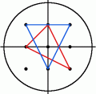

Consider the set $I_r$ of points $(x,y)$ with integer co-ordinates in the interior of the circle with radius $r$, centered at the origin, i.e. $x^2 + y^2 \lt r^2$.
For a radius of $2$, $I_2$ contains the nine points $(0,0)$, $(1,0)$, $(1,1)$, $(0,1)$, $(-1,1)$, $(-1,0)$, $(-1,-1)$, $(0,-1)$ and $(1,-1)$. There are eight triangles having all three vertices in $I_2$ which contain the origin in the interior. Two of them are shown below, the others are obtained from these by rotation.

For a radius of $3$, there are $360$ triangles containing the origin in the interior and having all vertices in $I_3$ and for $I_5$ the number is $10600$.
How many triangles are there containing the origin in the interior and having all three vertices in $I_{105}$?